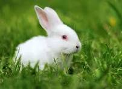
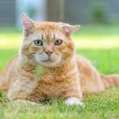
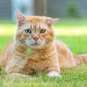

Por que ser voluntário ou adotar?
O voluntariado em abrigos de animais é uma forma poderosa de transformar vidas. Ao doar seu tempo, você ajuda a cuidar, socializar e preparar os animais para adoção responsável.
Como funciona a adoção de animais?
Se você deseja adotar um animal, saiba mais:
- o animal é vacinado.
- informamos sobre seu comportamento, idade e necessidades.
- Agende uma visita e conheça os voluntários responsáveis.
Exemplo animais adotados
 
